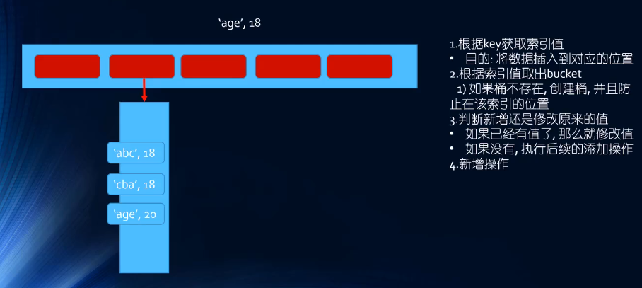

哈希表通常是基于数组进行实现的，但是相对于数组，有更多的优势
无论多少数据，插入和删除值需要接近常量时间（O(1)）时间级
哈希表的速度比树要快，几乎瞬间可以查到想要的元素
哈希表相较于树来说编码要容易的多
哈希表中的数据是没有顺序的，所以不能以一种固定的方式(从大到小)来遍历其中的元素
通常来说，哈希表重的 key 是不允许重复的，不能放置相同的 key, 用于保存不同的元素
哈希表的结构是数组，但是它特殊的地方在于对下标值的一种变换，这种变换我们可以称之为哈希函数，通过哈希函数可以获取到 HashCode公司使用一种数据结构来保存所有员工
设计一个数据结构，保存联系人和电话
存储单词信息
需要将单词转成适当的下标
幂的连乘表示编码唯一性 eg: 7654 = 7*10^3 + 6*10^2 + 5*10 + 4
哈希化：将大数字转化成数组范围内下标的过程
哈希函数：通常我们会将单词转成大数字，大数字在进行哈希化的代码实现放在一个函数中，这个函数就是哈希函数。
哈希表：最终将数据插入到这个数组，对整个结构的封装就称之为是一个哈希表。
解决：链地址法，开放地址法
在每一个位置不仅仅只存一个元素，而是存一个链表
本例子的结构,都是用数组代替
如果位置存在元素，则向下位查找空位